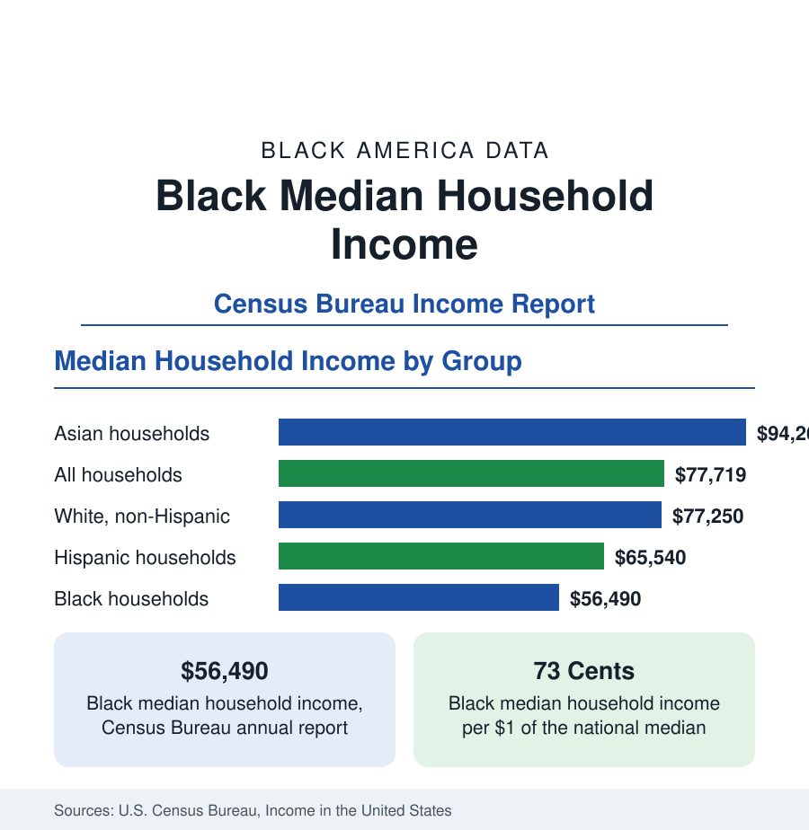

Black Census
Black Median Household Income in the United States
Black median household income stands at $56,490 in the Census Bureau's annual income report — how the figure is measured, how it compares, and what drives it.

Median household income is the most widely used single measure of a population's economic position, and for Black households in the United States the Census Bureau's annual income report places the figure at $56,490. The median is the midpoint: half of Black households earn more, and half earn less. This article explains how the Census Bureau measures household income, how the Black median compares with other groups and with the national figure, how it differs by region and household type, and what the data show about its movement over time.
How the Figure Is Measured
The figure comes from the Current Population Survey's Annual Social and Economic Supplement, the federal government's principal income survey, in which tens of thousands of households report their income for the previous calendar year. Household income counts the combined money income of everyone aged 15 and over living in the home — wages, salaries, self-employment income, Social Security, pensions, interest, and cash benefits — before taxes. It does not count non-cash benefits such as food assistance or employer health coverage, nor does it adjust for household size. The race classification follows the householder: a Black household is one whose householder identifies as Black alone.
Comparison With Other Groups
The national median household income in the same report is $77,719. Against that benchmark, the Black median of $56,490 is about 73 cents on the dollar. The full ordering in the report is: Asian households at $94,260, non-Hispanic White households at $77,250, Hispanic households at $65,540, and Black households at $56,490. The Black median is the lowest of the groups the Census Bureau reports, and the gap between the Black median and the national median — roughly $21,000 — is the standard statistical summary of the Black income position in the United States.
Differences Within the Black Population
The single median conceals wide internal variation, and the survey data describe its main contours. Married-couple Black households record median incomes far above the overall Black figure — roughly double the median for Black households maintained by a woman with no spouse present, which make up a large share of Black households and pull the overall median down. Region matters as well: Black median household income is highest in the West and Northeast and lowest in the South, where the largest share of the Black population lives. Educational attainment produces the steepest gradient of all: Black householders with a bachelor's degree or higher record median incomes several times those of householders without a high school diploma.
The Long-Term Trend
Read over decades, the series shows two patterns at once. In dollar terms, Black median household income has risen substantially, reaching its highest recorded levels in the most recent reports, with particularly rapid gains in the tight labor markets of recent years when wage growth was fastest at the bottom of the distribution. In relative terms, the ratio between the Black median and the national median has moved within a fairly narrow band for half a century, improving in strong labor markets and slipping in recessions. Economists reading the series generally conclude that overall economic growth lifts the Black median reliably, while the relative gap closes slowly and mainly when unemployment is low for a sustained period.
Reading the Statistic Carefully
Four cautions govern the use of this figure throughout this reference. First, the median describes the middle household, not the average experience: it is unaffected by very high incomes at the top. Second, household income is not individual earnings — it reflects how many earners a household contains, which is why this reference treats household income here, in the census section, and individual earnings separately in the employment section. Third, the figure is not adjusted for regional price differences, so identical medians in different states do not buy identical living standards. Fourth, income is not wealth: the gap in household net worth between Black and White households is far wider than the income gap, a distinction taken up in the business section's articles on Black wealth and assets.
Taken together, the income data locate the Black household economy precisely: a median of $56,490, roughly three-quarters of the national figure, wide internal spread by household type, region, and education, and a long record in which absolute gains have been real and repeated while relative position has changed slowly. The articles that follow in this section — on poverty, household composition, and homeownership — build out the rest of that picture.
More in Black Census
The Black Population of the United States: Size, Definitions, and Distribution
The Black population of the United States totals 52.8 million — 15.4 percent of the nation. How the Census Bureau defines and counts the population, and where it lives.
The Black Poverty Rate: Levels, Children, and the Long Trend
The official Black poverty rate is 17.1 percent — against 11.1 percent nationally and 7.7 percent for non-Hispanic White Americans. How poverty is measured and what the data show.
The Black Homeownership Rate: The Gap and Its History
The Black homeownership rate stands at 44.7 percent, against 72.4 percent for White households — a gap wider than when discrimination in housing was legal. The data and its drivers.
Source: U.S. Census Bureau, Income in the United States (Current Population Survey, Annual Social and Economic Supplement).